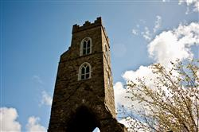

MARITIME AND CULTURAL TRAIL

We invite you to join our walking tours around the historical town of Drogheda. Visit key sites in the town including
The Highlanes Gallery
St. Peter's Catholic Church & St Oliver Plunkett's Shrine
Millmount
St Laurence Gate
Magdalene Tower
St. Peter's Protestant Church
Meet your Maritime Expert who will meet you at the door and point out the highlights and history of the location.
For those of you who are staying for the weekend and you wish to spend an afternoon exploring the county. The following places are less than 10 minutes drive from Drogheda
Beaulieu
Newgrange
Monasterboice Cross
Battle of the Boyne and Oldbridge House
Days : All weekend
Times : to Follow
Location :
Fees : Free